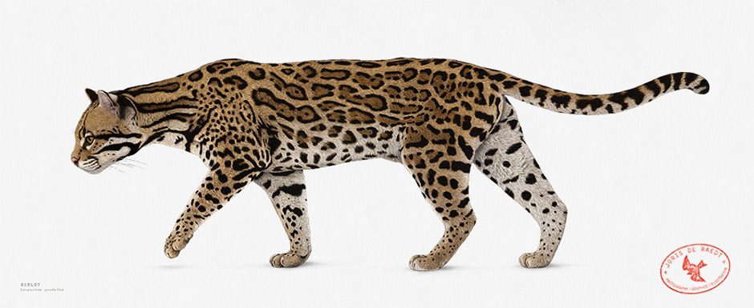
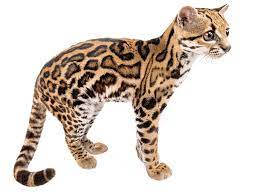
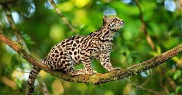
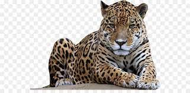
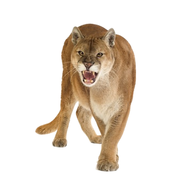
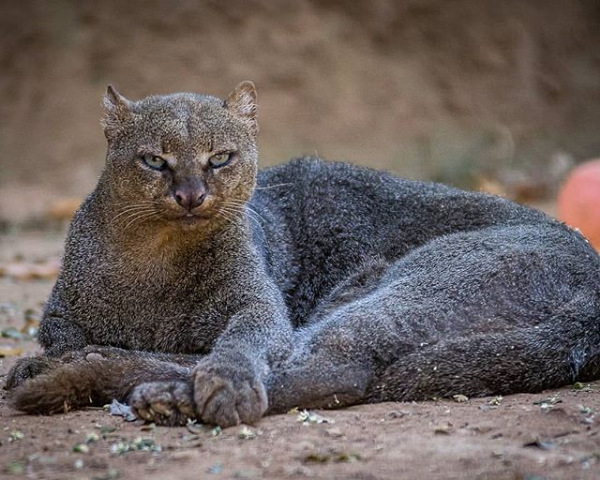

Felidae es una familia de mamíferos del orden Carnivora, comúnmente conocidos como gatos. El término "gato" se usa tanto para referirse a los felinos en general, como al gato doméstico o Felis catus.
Todos los felinos son carnívoros y, en la mayoría de los casos, son predadores que acechan a sus presas de manera solitaria. Los felinos salvajes estan presentes en África, Europa, Asia y América. Algunos están habituados a los hábitats boscosos, otros a los ambientes áridos y algunos incluso a los humedales y las montañas. Sus patrones de actividad varían desde los nocturnos hasta los crepusculares y los diurnos, dependiendo de las presas que prefieran.
En Costa Rica hay seis especies de felinos silvestres:
| Felinos de Costa Rica | ||||||
|---|---|---|---|---|---|---|
| Nombre científico | Nombre común | Longitud de cabeza y cuerpo | Longitud de la cola | Peso | Estado de conservación | Imagen |
| Leopardus pardalis | manigordo, ocelote | 70-90 cm | 30-40 cm | 11 kg | LC (preocupación menor) |  |
| Leopardus tigrinus | caucel, tigrillo | 39-78 cm | 20-42 cm | 2-3 kg | VU (vulnerable) |  |
| Leopardus wiedii | caucel, tigrillo | 40-60 cm | 3.5 kg | NT (casi amenazado) |  | |
| Panthera onca | tigre, jaguar | 162-183 cm | 75 cm | 36-160 kg | NT (casi amenazado) |  |
| Puma concolor | puma, león de montaña | 150-170 cm | 70-100 cm | 100-120 kg | LC (preocupación menor) |  |
| Puma yagouaroundi | yaguarundí, león breñero | 50-70 cm | 30-60 cm | 3.5 cm-9.1 kg | LC (preocupación menor) |  |